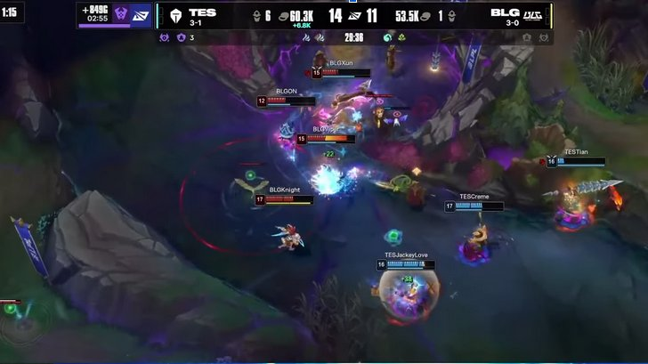
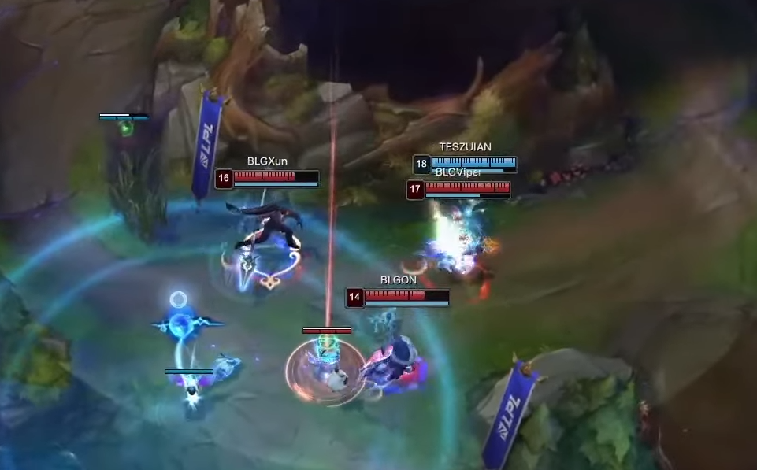

My prior note on BLG being the most formidable force in the LPL is not aging well, only 2 days past writing it. Top Esports managed to 2-0 them last night in an extremely odd series from both draft and gameplay perspectives.
In game 1 there was an interesting deviation from how Ashe Seraphine drafts tend to play out. BLG has first pick and take Ashe believing that TES will not take its counterpart in Seraphine. The duo has almost exclusively been paired, with the rarer scenario being Seraphine picked in isolation. TES surprised them by taking Seraphine.
The caveat with Ashe Seraphine is that Xin Zhao's power is amplified by enchanters, as he can continually refresh his cooldowns and stay in fights. Instead of countering Seraphine with Nautilus, they keep this amplification in mind and pick Lulu with Xin Zhao.
The last interesting pick in this draft is Vayne's rise as a counter to Gnar. Bin ends up having to blind pick with zero bans for him, so he ends up choosing Gnar. The strength of Gnar as a blind pick is that its counters will require volatility, examples being Irelia, Jayce, and ZUIAN's choice of Vayne.
Ranged top laners historically required more attention and variability, but aspects like fae lights and role quests have helped these lanes become more stable. Another strength of Vayne currently is being able to keep teleport while having a combat summoner spell. ZUIAN opts for exhaust, and is the reason he gains a reasonable gold and XP lead on Bin within the first 10 minutes.
Fast forward, TES has snowballed their winning lanes to a 7,000 gold lead. The three carries of TES also grow substantially stronger with more items, game 1 was basically ended without any fatal throws. Yet BLG managed to find a series of close opportunities that started from this image:

In this 3v4, TES is still ahead due to their two carries being so strong. The line drawn between the teams is the difference between winning and losing the fight. Azir and Ezreal hold spaces so well and will annihilate Knight if he tries something, while BLG have numbers and enough peel to hold their space as well. Creme crosses the line first, and TES have officially thrown the game.
The game ends with a final throw by BLG, combined with a great play by rookie ZUIAN.

The condemn here onto Viper looks relatively simple, but it is actually quite difficult within these milliseconds. ZUIAN teleports in and likely has upwards of 600ms (movement speed), meaning the control of your character in a small bundle of units becomes a lot harder. It's like driving at high speeds basically, accuracy of where you intend to be decreases. Viper is also purposefully trying to avoid the stun, standing close to the wall opposite of where ZUIAN is trying to condemn and constantly repositioning. If ZUIAN misses this condemn, he is dead within 1 second since he has no flash, and the fight becomes a lot harder.
I won't go over game 2 since I took a long time on game 1, but BLG made a flurry of errors starting from Varus being picked over Pantheon.
I mistook ZUIAN from his first series vs IG, losing in hopeless fashion 0-2, but he has quickly become possibly the top threat amongst top laners in China. Picking Jayce and Vayne vs Bin and winning both games is a tough feat, and it will be interesting to see how Top Esports progresses with him.